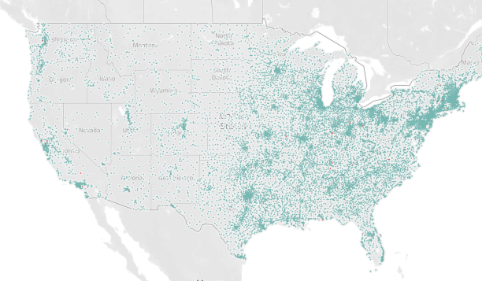
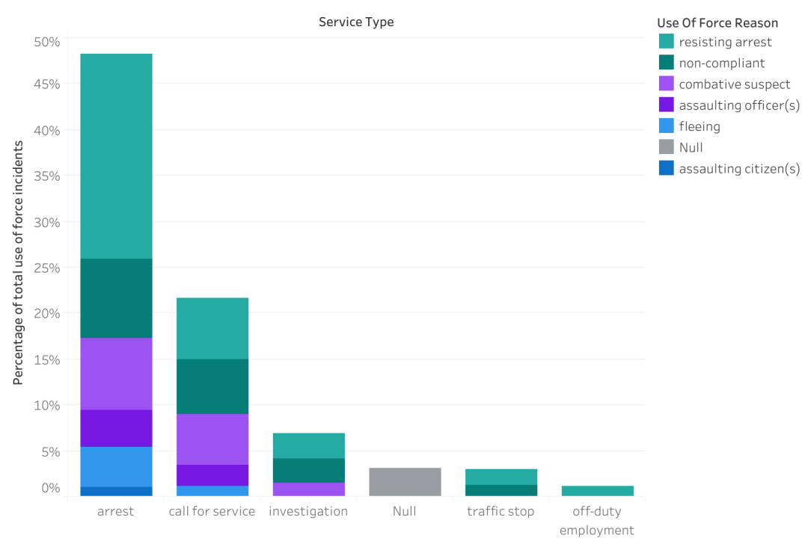

Project Findings
Open/Opaque's conclusions about use of force data available through the Police Data Initiative

Low Participation
Open/Opaque visualizes the low participation by police departments in the Police Data Initiative. Read more..
Limited Scope
Open/Opaque finds that datasets available through the Police Data Initiative are limited in scope. Read more..

Inconsistent Data
Open/Opaque finds that the kind of data collected varies widely between datasets. Read more..

More Questions than Answers
Open/Opaque finds that the data raises more questions than it answers. Read more..